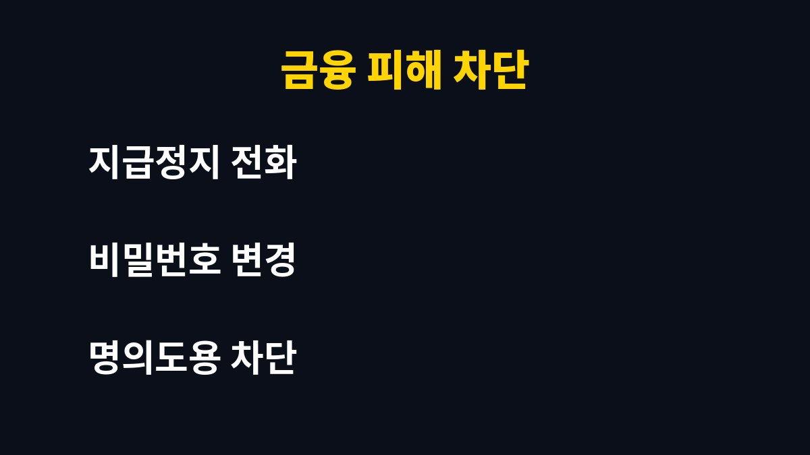

스미싱 링크를 눌렀다면 가장 먼저 할 일은 네트워크를 끊는 것이다. 택배·청첩장·과태료 문자를 받는 모든 사용자가 해당된다. 그런데 링크만 눌렀다고 무조건 털리는 것은 아니다. 진짜 위험한 순간이 따로 있으며, 이유는 아래에 있다.
링크를 누르는 것만으로 곧바로 피해가 생기는 경우는 많지 않다. 위험은 그다음 단계에서 시작된다. 연결된 페이지에서 앱 설치를 요구하거나, 개인정보와 인증번호 입력을 요구하는 단계이다.
안드로이드는 출처를 알 수 없는 앱 설치를 허용하는 순간 악성앱이 깔릴 수 있다. 아이폰은 앱 설치형 피해가 상대적으로 적지만, 가짜 로그인 페이지에 정보를 입력하면 같은 피해를 입는다. 눌렀더라도 아무것도 입력·설치하지 않았다면 대부분 큰 문제 없이 넘어간다.
먼저 비행기 모드를 켜서 외부 통신을 차단한다. 악성앱이 정보를 빼내는 통로를 막는 가장 빠른 방법이다. 이후 설정에서 최근 설치된 앱을 확인하고, 모르는 앱이 있다면 바로 삭제한다.
그다음 다른 기기에서 주요 계정의 비밀번호를 바꾼다. 감염 가능성이 있는 폰에서 비밀번호를 바꾸면 그대로 노출될 수 있으므로 반드시 다른 기기를 쓰는 것이 좋다. 금융 앱 인증서나 간편결제 앱도 점검 대상이다.
개인정보나 카드번호, 인증번호를 입력했다면 즉시 해당 금융사 고객센터에 전화해 지급정지를 요청해야 한다. 시간이 지날수록 피해 회복이 어려워지므로 지체하지 않는 것이 핵심이다. 이후 경찰청 사이버범죄 신고 창구에 피해 사실을 접수하는 것이 좋다.
| 상황 | 바로 할 일 |
|---|---|
| 링크만 클릭 | 비행기 모드, 앱 목록 점검, 비밀번호 변경 |
| 앱 설치까지 진행 | 앱 삭제, 백신 검사, 필요 시 초기화 |
| 정보·인증번호 입력 | 금융사 지급정지, 경찰 신고, 명의도용 차단 |

출처를 알 수 없는 앱 설치 허용을 꺼두는 것이 기본이다. 문자 속 링크는 누르지 말고, 택배라면 공식 앱이나 사이트에서 직접 조회하는 습관이 필요하다. 통신사의 스팸 차단 기능과 명의도용 방지 서비스를 켜두면 한 번 더 막을 수 있다.
핵심은 클릭이 아니라 입력과 설치를 막는 것이다. 눌렀다고 자책하기보다 위 순서대로 침착하게 대응하는 것이 피해를 줄이는 가장 좋은 방법이다.
생활 밀착 IT 정보를 계속 받아보려면 구독해 두는 것이 좋다.
기사·공식 발표 기준이며 출시·가격 정보는 바뀔 수 있다.